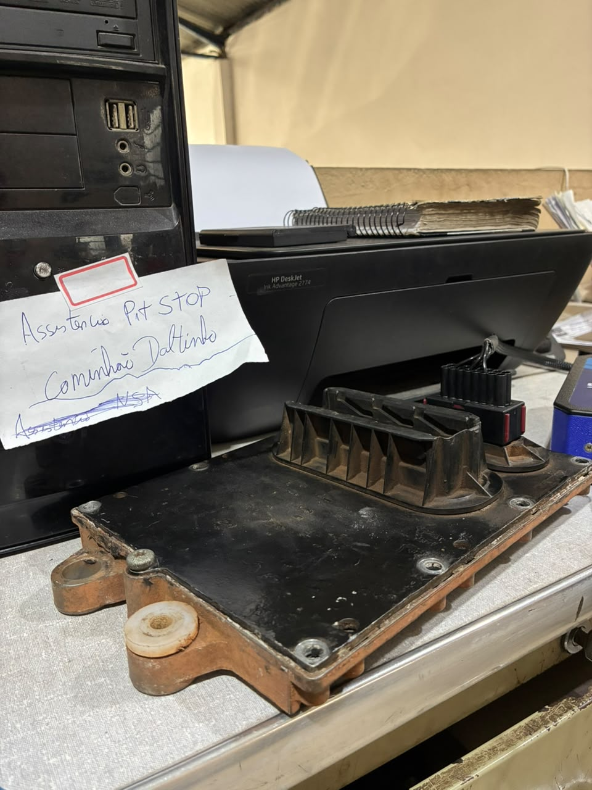
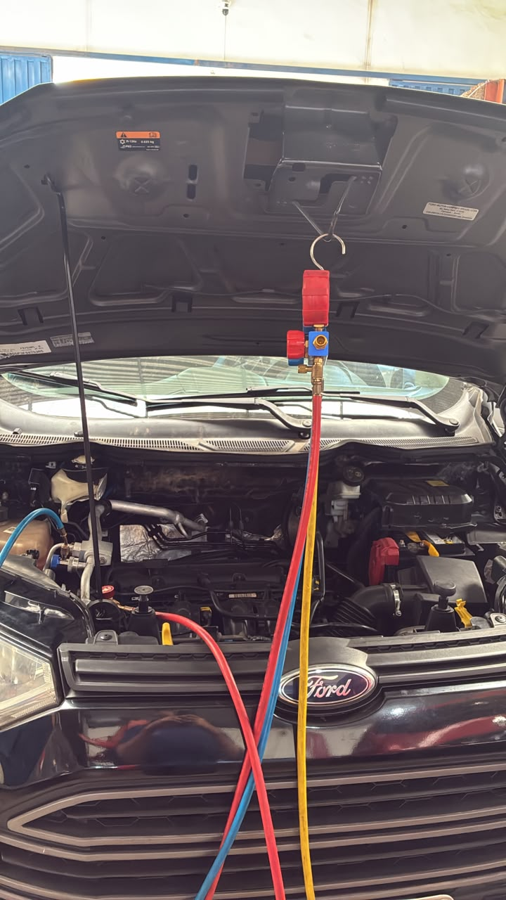

Falha no 2º cilindro: diagnóstico confirmou a bobina.
Scanner e avaliação do sistema de injeção direcionaram a identificação do defeito na bobina do 2º cilindro.
Ver trabalho completoExplore casos atendidos pela Avelar e filtre por remap, ar-condicionado automotivo, injeção eletrônica, módulos, diagnóstico, programação, linha pesada ou agrícola.
Scanner e avaliação do sistema de injeção direcionaram a identificação do defeito na bobina do 2º cilindro.
Ver trabalho completoUm mesmo trabalho pode aparecer em mais de uma categoria quando combina especialidades, como ar-condicionado + linha pesada ou módulo + programação.
13 trabalhos encontrados
Scanner e avaliação do sistema direcionaram o diagnóstico da falha na bobina do 2º cilindro.
Ver caso completo →
Serviço eletrônico de Decode / IMMO OFF para aplicações Siena, Palio e Strada conforme compatibilidade.
Ver caso completo →
Reparo no sistema de climatização de caminhão registrado em vídeo.
Ver caso completo →
Reparo no sistema de climatização de veículo atendido da região.
Ver caso completo →
Reparo eletrônico de central / monitor de plantio registrado em foto e vídeo.
Ver caso completo →
Reparo e programação de módulo eletrônico de caminhão.
Ver caso completo →
Reparo no sistema de climatização de veículo utilizado pelo Grupo Heineken.
Ver caso completo →
Reparo no sistema de ar-condicionado automotivo.
Ver caso completo →
Investigação de falha intermitente no sistema de iluminação.
Ver caso completo →
Reparo no módulo do motor identificado como PLD/ECU.
Ver caso completo →
Reparo no sistema de ar-condicionado automotivo em Passos.
Ver caso completo →
Complemento de carga do sistema de ar-condicionado.
Ver caso completo →
Remap e calibração eletrônica em veículo de Carmo do Rio Claro–MG, com resultado documentado no caso.
Ver caso completo →Tente outra categoria ou uma busca mais ampla.
Envie os dados do veículo ou equipamento e o que ele está apresentando para a equipe.